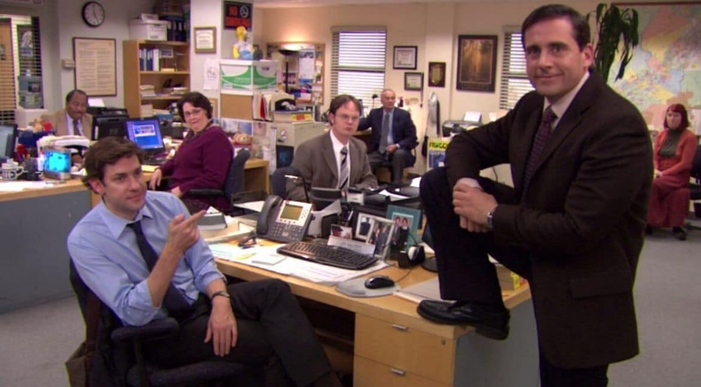
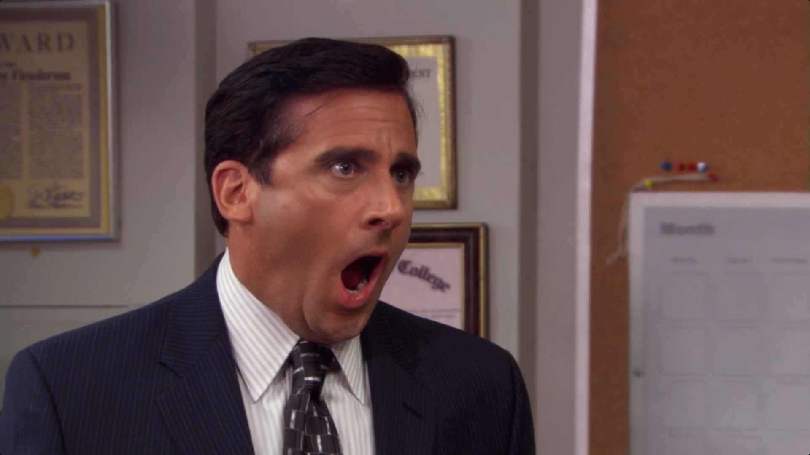
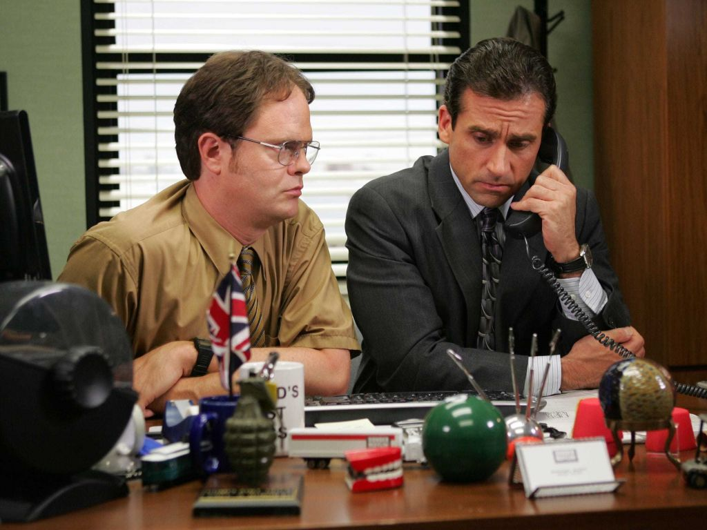
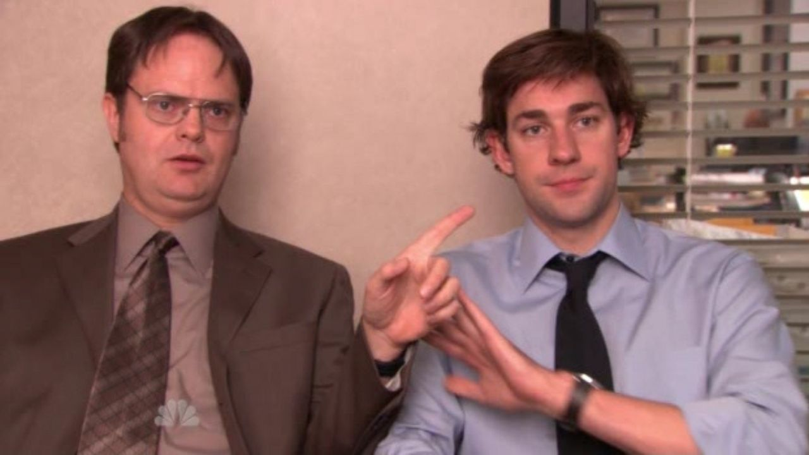
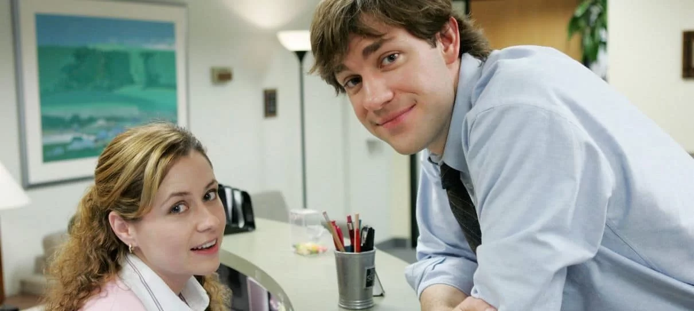
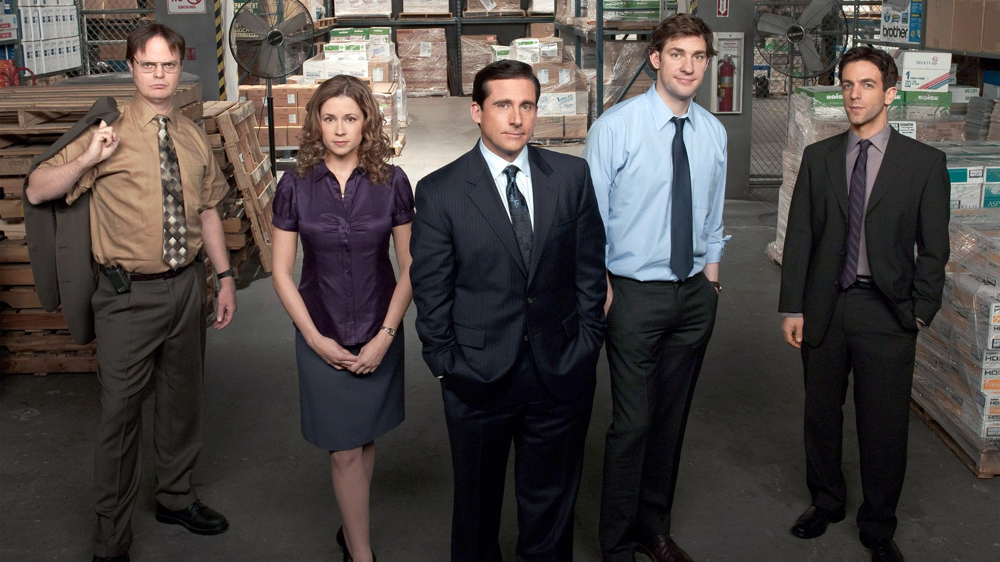

O iludido chefe Michael procura conduzir seus funcionários insatisfeitos na empresa de papel Dunder Mifflin em meio a incessantes contratempos e idiossincrasias. Assista o quanto quiser. Vencedora do Emmy de Melhor Série Cômica em 2006, foi onde Steve Carell, Ed Helms e outros começaram.